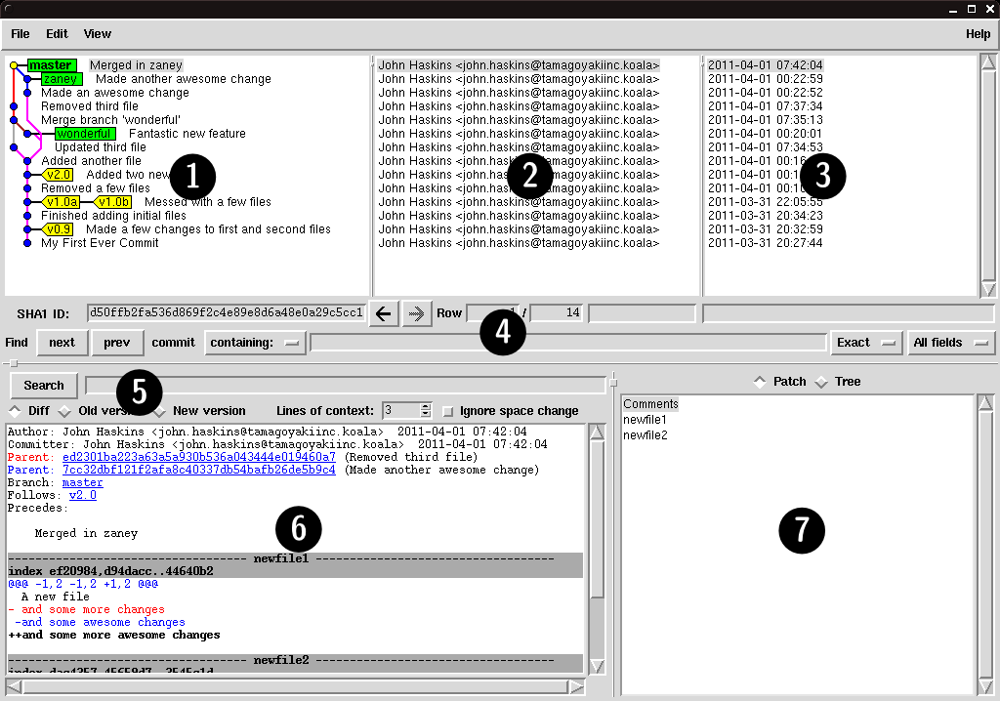
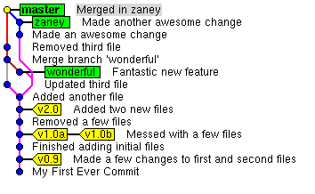
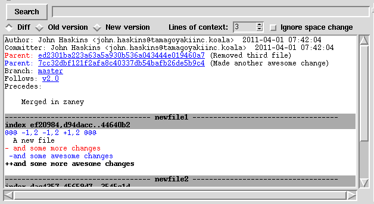
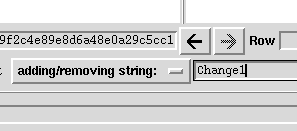
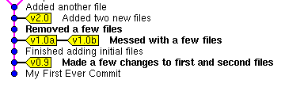

Week 5Day 2 - "Back to logging"
Visualisation to the max
With the basic operations down, as we discovered in Week 1, let us now move on to using the GUI to view the history of our database.
The visualiser that is bundled with Git is packed with features and can be invoked in one of two ways, either by running gitk from the command line, or by choosing Repository - Visualize All Branch History or Repository - Visualize master's Branch History, the latter menu item is worded with the assumption that you are on the master branch of course.
Whichever way we begin an instance of gitk, we are likely to end up with a screen like the one in Figure 8.
|  |
|
Figure 8
Initial gitk view of our repository |
|
Let us spend a few minutes familiarising ourselves with the layout of the gitk tool.
The window is split up into roughly seven different areas.
We will take a brief look at each of these below.
- History Graph - This area of the screen gives a graphical representation of the history of our repository.
Similar to the
git log --graph option that we used previously, the graph here is much more readable.
- Committer History - The committer history tells us the person who added the commit which is horizontally adjacent in the commit graph.
- Date History - The date history is very similar to the committer history section of the screen and shows us a simple view of the date of the commit which is horizontally adjacent.
- History Search - This section of the screen allows you to narrow down and highlight a subset of commits which meet a certain criteria.
It also allows you to navigate through these results.
- Commit Search - Once you have highlighted a commit, the commit search section allows you to find specific strings within that commit, including looking at just old or new lines to the repository.
- Content View - This window actually shows the data that was stored in the commit and allows you scroll through either changes or complete files.
- File System View - The file system view shows you a list of files that were either modified in a specified commit, or that were present in the commit.
To start with, let us take a look at the graph that is present in History Graph section of the screen in Figure 9.
Essentially this is just a very simplified version of the graphs we were drawing in the previous chapter.
As you can see, the only information that appears to be missing from the graph is the commit ID, which can be obtained quite easily by clicking on the relevant commit and viewing the string presented just below the graph pane.
|  |
|
Figure 9
Graphical history of our repository |
|
The historical graph shows us all active branches, tags and commits.
From looking at this it is easy to see where our merges occurred and where the branch HEADs point to.
The branches are identified by green rectangles, and the tags as yellow labels.
Each circle on the graph is a commit and is linked to the panes on the right, where you can see the committer and date information.
If we select the master branch HEAD, which should be the top commit, (in fact on opening gitk this should already be selected), we should see a pane similar to Figure 10 in the Content View section of the screen.
|  |
|
Figure 10
Content view of master HEAD |
|
Notice in this that we have two parents listed, which is what we would expect, as the last commit we did was that of a merge from zaney into master.
Notice also that below this, we get to see a diff output of exactly what changed during this merge.
Interestingly, it shows that newfile1 loses one line from parent ed2301b and another from parent 7cc32db.
These are both replaced by the next line, which reads and some more awesome changes.
The current commit is a little special as it is a merge.
If you choose any normal commit, you can use the Diff, Old version and New version buttons to either show what the file used to look like (Old), what it looks like now (New), or the default view which is the Diff and shows the combination of the changes.
Above the File System View pan is a button to switch between Patch and Tree views.
By default, this is set to Patch and changes what the Content View pane displays.
When set to Patch, this shows us the changes between the old commit and the new one.
However, when we switch this to Tree view the Content View pane changes to show the contents of a file selected from its pane, at the current commit.
In this way, it allows you to browse and display files from previous commits graphically and effortlessly.
Simply select the commit, selected Tree mode, choose the file, et voila, it is presented in the Content View pane.
So as you can see, the gitk tool is already quite powerful.
We are now going to take things a step further.
Remember in Week 3 we had a way of searching the repository for the introduction of a string.
We can do the exact same thing with gitk.
We are going to drop down the box which currently reads contains: in the History Search pane and change it to add/removing string:.
Then we are going to enter Change1 into the field on the right.
Your changes should look similar to Figure 11.
|  |
|
Figure 11
Searching for a string |
|
After you have finished typing you should already have noticed a difference in the History Graph pane.
Notice how some commits are now highlighted in bold, as demonstrated in Figure 12?
|  |
|
Figure 12
Search results are highlighted |
|
If you remember from Week 3, when we first ran the git log -S "Change1" command, we were presented with only one commit.
That was titled, Made a few changes to first and second files.
Our repository has moved on since then and we can see that that particular string, Change1 was added or removed in two other commits as well.
This was when we totally changed my_second_committed_file and when we removed my_first_committed_file a little later.
The Next and Previous buttons can be used to navigate through the search results.
Now that we have found the commits that contain the change to the string we are looking for.
The question is, where in the file does this change occur? We can now use the Commit Search pane to see this.
Typing Change1 into this search box will highlight the relevant text in the Content View pane below.
It really is as easy as that.
Whilst it is a great idea to remember and use the command line arguments and parameters, it is also useful to know that these other tools are available.
GUI tools should not be frowned upon, as some command line purists do.
GUI tools are as much a part of the development process as their command line counterparts.
Both have their uses and the most important lesson of all is to know when to use which.
This lesson will most likely come with experience and time, or as a friend of mine used to put it, old age.
Customising the visualisation
In the trenches...
"Eugene," called Klaus as the tools developer walked past him.
"Could I borrow you for a second?"
"I guess," said Eugene coldly.
"What is it that you want exactly?"
"Well," Klaus began,
"I started using the GUI tools a little and found something you might consider interesting. I know you spend a lot of time switching between different versions of our code looking for various functions and things and I found this cool tool in the GUI."
Eugene breathed in deeply.
Knowing Eugene, it wouldn't be anything amazing, but nevertheless, his interest had been piqued.
The gitk tool has a pretty awesome feature called views.
Sometimes it may be necessary to keep track of everything a certain person has done.
Or maybe see anything that has happened in the last week.
You may even be interested in people adding certain strings to the repository.
The views feature allows you to do just that.
By setting up a view, you can filter the results that are displayed in gitk, byt simply switching to it.
In the example we are going to go back to the search we made previously and filter the history for any changes to my_first_committed_file that add or remove the string Change1.
First we are going to load the dialog box, by using the menu View - New View....
The resulting dialog is displayed below and we have already filled in the required information.
 |
|
Figure 13
Setting up a view |
|
We changed the View Name to be Change1.
This is simply an identifier that will allow us to choose our view in the future.
We have also ticked the Remember this view.
Ticking this box ensures that the view is remembered once we close gitk.
Sometimes, this behaviour is not desired, but in our case we want this view to be available every time we start gitk.
There are many options which we can set, but in our case we have chosen to simply add Change1 to the Changes to files: section.
This is equivalent to the search that we performed earlier.
We have also filtered the files which are included in the results, by putting, my_first_committed_file in the Enter files and directories to be included box.
The result of this view is shown in Figure 14.
Notice that instead of all the commits being shown, we are just shown the two that we are interested in.
Both of these commits are referred to earlier in the chapter, when we ran the search manually in gitk
 |
|
Figure 14
View results |
|
This ends our tour of the gitk utility.
Hopefully you have seen that it can actually present a large amount of information in a very compact and usable way.
As such it should not be forgotten about and should remain part of your arsenal of Git tools.
|
|